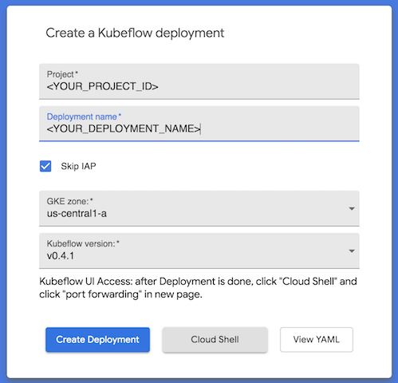
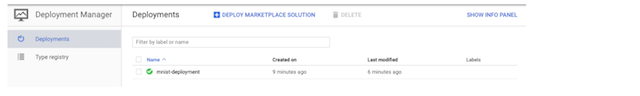
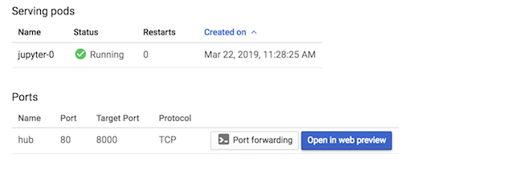
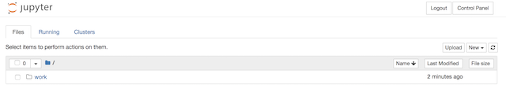

In this tutorial, You will learn to setup and use Kubeflow for building and deploying deep learning based recommendation engine. Kubeflow an open-source project which aims to make running ML workloads on Kubernetes simple, portable and scalable. Kubeflow adds some resources to your cluster to assist with a variety of tasks, including training and serving models and running Jupyter Notebooks. It also extends the Kubernetes API by adding new Custom Resource Definitions (CRDs) to your cluster, so machine learning workloads can be treated as first-class citizens by Kubernetes.
What You'll Learn
- How to set up a Kubeflow cluster on GCP
- How to use Jupyter Hub on Kubeflow to run jupyter notebook
- How to use Tensorflow to build deep learning based recommendation engine
What You'll Need
- An active GCP project
- Access to the Google Cloud Shell, available in the Google Cloud Console
- If you'd prefer to complete the codelab on a local machine, you'll need to have gcloud, kubectl, and docker installed
Downloading the Project Files
The first step is to download a copy of the repository created for the tutorial. This codelab can be completed on a local machine, or through Google Cloud Shell ( Recommended):
Download in Google Cloud Shell
Enabling Boost Mode (Cloud Shell Only)
If you are running this codelab out of Cloud Shell, you can enable Boost Mode.It can be enabled through the settings dropdown.

Setting Environment Variables
Before we can start, we should set up a few environment variables we will be using through the course of the codelab. The first is the project ID, which denotes which GCP project we will be using
// available project ids can be listed with the following command:
// gcloud projects list
PROJECT_ID=<YOUR_CHOSEN_PROJECT_ID>
gcloud config set project $PROJECT_ID
We also need to provide the zone we want to use
ZONE=< CHOICE OF ZONE >
Next, we will set the Kubeflow deployment name
DEPLOYMENT_NAME=< Name of Deployment >
Enabling the API
Before using Google Kubernetes Engine (GKE), you must enable the API for your project through the Google Cloud Platform Console
Setting Up Kubeflow Cluster
You can use GCP Click to Deploy to setup Kubeflow in Kubernetes Cluster easily.

Fill in the following values in the resulting form:
- Project: Enter your GCP $PROJECT_ID in the top field
- Deployment name: Set the default value to $DEPLOYMENT_NAME. Alternatively, set $DEPLOYMENT_NAME to a different value and use it here. Note that this value must be unique within the project.
- GKE Zone: Use the value you have set for $ZONE, selecting it from the pulldown.
- Kubeflow Version: v0.4.1
- Check the Skip IAP box
The resources created here will be controlled by the GCP Deployment Manager. Here, you can see the current status of the deployment and manage everything in one place. It may take up to 10 minutes before the cluster is ready to use.

When the cluster is fully set up, you can connect your local kubectl session to it. The following command should output "kubeconfig entry generated" when run successfully, letting you know that your GCP credentials were added to your kubeconfig
gcloud container clusters get-credentials \
$DEPLOYMENT_NAME --zone $ZONE --project $PROJECT_ID
Now, you should now be able to interact with your cluster through the kubectl command. Switch to the kubeflow namespace to see the resources that were pre-installed on the Kubeflow cluster
kubectl config set-context $(kubectl config current-context) --namespace=kubeflow
If you query the resources running on your cluster, you should see that Kubeflow has automatically provisioned everything you'll need to run training and serving jobs.
kubectl get all
For more information on the components that you see listed here, check out the official documentation
In this tutorial, you will learn to open and access Jupyter Notebook for building and evaluating deep learning based recommendation engine. Typically, data scientist may want to try different things in their familiar Jupyter Notebook environment. Kubeflow provides Jupyter Notebook using Jupyter Spawner.
Once the kubeflow is set up , you can click on Cloud Shell button

you need to select jupyter-lb option and click on it. This would take you to

You need to click on the Port forwarding button in order to launch the jupyter hub. This would open another dialogue box where you need to click on Run in Cloud Shell button

After that you need to click on Open in web preview to access jupyter hub

This would open up the login page for accessing jupyter notebook where you need to enter the login credentials ( It is not set , so you can fill in any details)

The next page is spawner options where you need to select the base image name gcr.io/kubeflow-images-public/tensorflow-1.12.0-notebook-cpu:v0.4.0

You have to click on Spawn and that would take you to Jupyter home directory

Go to work directory and open terminal by clicking on New.
Clone the repo where we have already created notebooks for you.
git clone https://github.com/meabhishekkumar/deep-learning-production.git
Back in the Jupyter Notebook, Navigate to Notebooks folder where you will find the deep-learning-book-recommendation.ipynb notebook. Open the notebook and try running all cells one by one.
You can play with the notebook by trying different algorithms as well.
We will be working out of the books-recommendation directory of the repository, so change to the proper directory and set an environment variable
Navigate to book-recommendation
cd books-recommendation
WORKING_DIR=$(pwd)
Creating a ksonnet Project
Kubeflow makes use of ksonnet to help manage deployments. ksonnet is a templating engine that acts as another layer on top of kubectl. While Kubernetes is typically managed with static YAML files, ksonnet allows you to create parameters that can be swapped out for different environments, which is a useful feature for complex machine learning workloads
If you don't have ksonnet's ks command installed, download it and add it to your path (if it's already installed on your system, you can skip this step)
// download ksonnet for linux (including Cloud Shell)
// for macOS, use ks_0.13.0_darwin_amd64 for Linux use : ks_0.13.0_linux_amd64
KS_VER=ks_0.13.0_linux_amd64
//download tar of ksonnet
wget --no-check-certificate \
https://github.com/ksonnet/ksonnet/releases/download/v0.13.0/$KS_VER.tar.gz
//unpack file
tar -xvf $KS_VER.tar.gz
//add ks command to path
PATH=$PATH:$(pwd)/$KS_VER
Ksonnet resources are managed in a single project directory, just like git. To create our ksonnet project directory, we will use ks init:
KS_NAME=my_ksonnet_app
ks init $KS_NAME
cd $KS_NAME
If you look inside the new my_ksonnet_app project directory, you should see an app.yaml file, along with four directories. One directory is environments, which was automatically populated with information about how to attach to your Kubernetes cluster. You can list information about the default environment with the following command
ks env list
Another folder within your ksonnet project is components, which holds a set of jsonnet files that represent Kubernetes resources that can be deployed to the cluster. For now it is mostly empty. For the purpose of the codelab, we will add some pre-written components to train and serve a Tensorflow model:
cp $WORKING_DIR/ks_app/components/* $WORKING_DIR/$KS_NAME/components
You will now have a number of ksonnet components that are ready to be customized and deployed. You can list them using the ks command
ks component list
Now, add some Kubeflow resources to your local ksonnet project
VERSION=v0.4.1
ks registry add kubeflow \
github.com/kubeflow/kubeflow/tree/${VERSION}/kubeflow
ks pkg install kubeflow/tf-serving@${VERSION}
The code for our Tensorflow project can be found in the model.py file in the examples repository. model.py defines a fairly straight-forward Tensorflow training program, with no special modifications for Kubeflow. After training is complete, it will attempt to upload the trained model to a path we input. For the purpose of this codelab, we will create and use a Google Cloud Storage (GCS) bucket to hold the trained model.
Setting up a Storage Bucket
BUCKET_NAME=strata-$KS_NAME-$PROJECT_ID
gsutil mb gs://$BUCKET_NAME/
Building the Container
To deploy our code to Kubernetes, we have to first build our local project into a container:
//set the path on GCR you want to push the image to
TRAIN_PATH=us.gcr.io/$PROJECT_ID/ak-kubeflow-train
//build the tensorflow model into a container
//container is tagged with its eventual path on GCR, but it stays local for now
docker build $WORKING_DIR/train -t $TRAIN_PATH -f $WORKING_DIR/train/Dockerfile.model
Now, test the new container image locally to make sure everything is working as expected
docker run -it $TRAIN_PATH
You should see training logs start appearing in your console:
If you're seeing logs, that means training is working and you can terminate the container with Ctrl+c. Now that you know that the container can run locally, you can safely upload it to Google Container Registry (GCR) so you can run it on your cluster.
//allow docker to access our GCR registry
gcloud auth configure-docker --quiet
//push container to GCR
docker push $TRAIN_PATH
If you are using cloud shell, you may run out of space. So, you can clean up existing containers / images.
docker ps
docker stop <CONTAINER_ID>
docker rm <CONTAINER_ID>
docker image rm -f $TRAIN_PATH
Training on the cluster
Finally, we can run the training job on the cluster. We can do this using the train component we added to our ksonnet project earlier. Before we can deploy it, we must set some parameters to point to our training image and storage bucket
//set the parameters for this job
ks param set train image $TRAIN_PATH
ks param set train name "train-book-recsys-1"
ks param set train modelDir gs://${BUCKET_NAME}/model
ks param set train exportDir gs://${BUCKET_NAME}/export
One thing to keep in mind is that our python training code has to have permissions to read/write to the storage bucket we set up. Kubeflow solves this by creating a service account within your project as a part of the deployment. You can verify this by listing your service accounts:
gcloud --project=$PROJECT_ID iam service-accounts list | grep $DEPLOYMENT_NAME
This service account should be automatically granted the right permissions to read and write to our storage bucket. Kubeflow also added a Kubernetes secret called "user-gcp-sa" to our cluster, containing the credentials needed to authenticate as this service account within our cluster:
kubectl describe secret user-gcp-sa
To access our storage bucket from inside our train container, we just need to set the GOOGLE_APPLICATION_CREDENTIALS environment variable to point to the json file contained in the secret. Luckily, the train.jsonnet component is already set up to do this for us, we just have to set two more parameters:
ks param set train secret user-gcp-sa=/var/secrets
ks param set train envVariables \
GOOGLE_APPLICATION_CREDENTIALS=/var/secrets/user-gcp-sa.json
Now that all the parameters are set, we can deploy the training job to the cluster:
ks apply default -c train
After applying the component, there should be a new tf-job on the cluster called my-train-1-chief-0. You can use kubectl to query some information about the job, including its current state.
kubectl describe tfjob
For even more information, you can retrieve the python logs from the pod that's running the container itself (after the container has finished initializing):
kubectl logs -f train-book-recsys-1-chief-0
When training is complete, you should see the model data pushed into your GCS bucket.
Monitoring
Setup the LOG Dir pointing to the Model folder in the GCS bucket.
LOGDIR=gs://${BUCKET_NAME}/model
Set up logDir in the Tensboard.
ks param set tensorboard logDir ${LOGDIR}
To enable the access for Tensorflow , add credentials like we did during the training.
ks param set tensorboard secret user-gcp-sa=/var/secrets
ks param set tensorboard envVariables \
GOOGLE_APPLICATION_CREDENTIALS=/var/secrets/user-gcp-sa.json
Now you can apply the changes and run the Tensorboard.
ks apply default -c tensorboard
In order to view Tensorboard you can use port-forwarding.
kubectl port-forward service/tensorboard-tb 8092:80
Now that you have a trained model, it's time to put it in a server so it can be used to handle requests. To do this, we'll use two more components from the repository, called book-recsys-deploy-gcp and book-recsys-service
The book-recsys-deploy-gcp component contains a TensorFlow Serving implementation. We simply need to point the component to our GCS bucket where the model data is stored, and it will spin up a server to handle requests. Unlike the tf-job, no custom container is required for the server process. Instead, all the information the server needs is stored in the model file
ks param set book-recsys-deploy-gcp modelBasePath gs://${BUCKET_NAME}/export
ks param set book-recsys-deploy-gcp modelName book-recsys
ks apply default -c book-recsys-deploy-gcp
To verify the server started successfully, you can check its logs. You should see that it found your bucket and is waiting for requests
kubectl logs -l app=book-recsys
Although we now have a server running as a deployment within the cluster, it's inaccessible to other pods without adding an associated service. We can do so by deploying the book-recsys-serve component, which simply creates a ClusterIP service associated with the book-recsys-deploy-gcp deployment.
ks apply default -c book-recsys-service
If you describe the new service, you'll see it's listening for connections within the cluster on port 9000
kubectl describe service book-recsys-service
Now that we have a trained model in our bucket, and a Tensorflow server hosting it, we can deploy the final piece of our system: a web interface to interact with our model. The code for this is stored in the web-ui directory of the repository.
The web page for this task is fairly basic; it consists of a simple flask server hosting HTML/CSS/Javascript files. The flask script makes use of Rest End Point exposed by Tensorflow Serving.
@app.route('/', methods=['GET', 'POST'])
def index():
if request.method == 'POST':
result = request.form
user_to_predict = int(result["user_id"])
rec_count = int(result["rec_count"])
headers = {'content-type': 'application/json'}
json_data = {"instances": encode_input(user_to_predict)}
request_data = json.dumps(json_data)
## model URL : http://book-recsys-service:8500/v1/models/book-recsys:predict
response = requests.post(
url=args.model_url, headers=headers, data=request_data)
You can also use the python code to interact with the TensorFlow server through gRPC. Here is a sample :
from grpc.beta import implementations
from tensorflow_serving.apis import predict_pb2
from tensorflow_serving.apis import prediction_service_pb2 as psp
# create gRPC stub
channel = implementations.insecure_channel(server_host, server_port)
stub = psp.beta_create_PredictionService_stub(channel)
# build request
request = predict_pb2.PredictRequest()
request.model_spec.name = server_name
request.model_spec.signature_name = 'serving_default'
request.inputs['x'].CopyFrom(
tf.contrib.util.make_tensor_proto(image, shape=image.shape))
# retrieve results
result = stub.Predict(request, timeout)
resultVal = result.outputs["classes"].int_val[0]
scores = result.outputs['predictions'].float_val
version = result.outputs["classes"].int_val[0]
Building the Container
Like in the training step, we have to build a container from our code before we can deploy it on the cluster:
// set the path on GCR you want to push the image to
UI_PATH=us.gcr.io/$PROJECT_ID/ak-kubeflow-web-ui
// build the web-ui directory
docker build $WORKING_DIR/web-ui -t $UI_PATH
// allow docker to access our GCR registry
gcloud auth configure-docker --quiet
// push the container to GCR
docker push $UI_PATH
If you are using cloud shell, you may run out of space. So, you can clean up existing containers / images.
docker ps
docker stop <CONTAINER_ID>
docker rm <CONTAINER_ID>
docker image rm -f $UI_PATH
Set parameters and deploy to the cluster
// set parameters
ks param set web-ui image $UI_PATH
ks param set web-ui type LoadBalancer
// apply to cluster
ks apply default -c web-ui
Accessing the UI
The web-ui service is deployed using the type LoadBalancer, unlike our previous book-recsys-service, which was ClusterIP. This means that while book-recsys-service is only accessible to other pods within our cluster, web-ui is exposed to the public internet.
You can find the IP address assigned to the service using kubectl
kubectl get service web-ui
If you enter the IP address in a web browser, you should be presented with the web interface.
When you're done with the codelab, it's a good idea to remove the resources you created to avoid any charges:
Delete the cluster and other resources provisioned by Kubeflow:
gcloud deployment-manager deployments delete $DEPLOYMENT_NAME
Delete the Google Cloud Storage bucket:
gsutil rm -r gs://$BUCKET_NAME
Delete the container images uploaded to Google Container Registry:
//find the digest id for each container image
gcloud container images list-tags us.gcr.io/$PROJECT_ID/kubeflow-train
gcloud container images list-tags us.gcr.io/$PROJECT_ID/kubeflow-web-ui
//delete each image
gcloud container images delete us.gcr.io/$PROJECT_ID/kubeflow-web-ui:$DIGEST_ID
gcloud container images delete us.gcr.io/$PROJECT_ID/kubeflow-train:$DIGEST_ID
Resources can also be deleted directly through the Google Cloud Console UI.